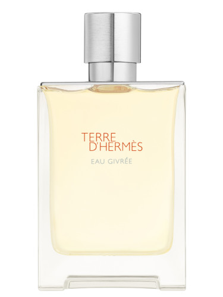

Fragrance Realm

Terre d'Hermes Eau Givree Hermès
Price: 100 EUR
Description: Terre d'Hermes Eau Givree by Hermès is a Citrus Aromatic fragrance for men. This is a new fragrance. Terre d'Hermes Eau Givree was launched in 2022. The nose behind this fragrance is Christine Nagel. Top note is Citron; middle notes are Juniper Berries and Timur; base notes are Woody Notes and Mineral notes.
Main accords:
- citrus
- woody
- fresh spicy
Top Notes: Citron
Middle Notes: Juniper Berries
Base Notes: Woody Notes , Mineral Notes